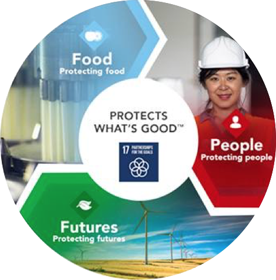
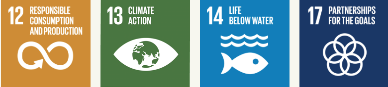
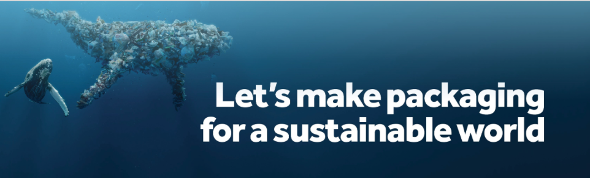

MundoTerra - Suistainable packaging partners in the world.
Mundo Terre provides an environmentally friendly packaging list of companies that are currently working with
us.
This list will guide you to our partners, they have the same mission and they are offering an environmental
advantage to businesses, including start-ups, medium size and large size enterprises. We work togethere to achieve
a better sustainable way of saving our planet.
Partner list making a better world
Our packaging partners depends on what type of product they offer such as paper or plastics taking care of each
individual. All members are taking part in our community.
Our list of packaging partners are:
Tetrapark: They apply its commitment to innovation,understanding
of consumers needs and its relationships with suppliers to deliver solutions for food.
Tetrapak believe in responsible organistion leadership, creating a profitable growth in harmony with
environmental sustainability.

Ecoproducts: its mission is to understand the connection between
the health of the planet and the impacts of disposable packaging. Every day they work to advance Zero Waste
systems, and help their customers be better stewards of the environment.
Unilever: supports the following UN Sustainable Developments Goals and
applying the circular economy, it can be reused, recycled or composted plastics.

Smurfit Kappa Group: Packaging holds a valuable, sustainable role
in guarding against waste and through its initiative, using sustainable materials in packaging design and
recycling more sustainable solutions for their clients and our planet.

DS Smith: is a leading provider of corrugated packaging solutions.
They operate across 37 countries and employ over 31,000 people. The headquarter is in London, United Kindgom.
Its mainly procuction are plastics, paper and plastics.